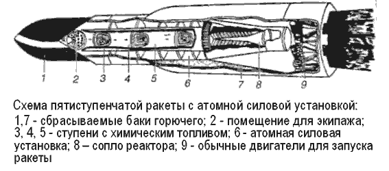
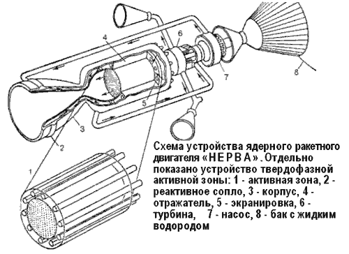
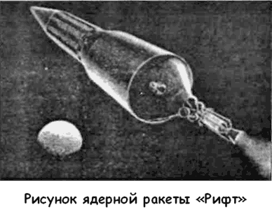
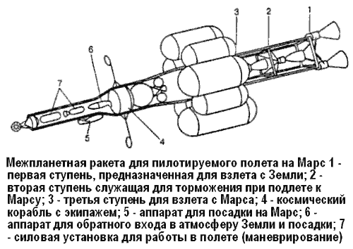

Межпланетные корабли с ядерными двигателями
Итак, чтобы сообщить одному килограмму массы вторую космическую скорость, необходимую для совершения межпланетного полета, нужна энергия примерно четырех килограммов химического ракетного топлива, но ту же энергию в состоянии выделить крупинка ядерного горючего — урана с массой меньше миллиграмма!
Процессы, при которых выделяется ядерная энергия, подразделяются на радиоактивные превращения, реакции деления тяжелых ядер, реакции синтеза легких ядер и реакции аннигиляции. Для использования в ракетной технике более подходит хорошо изученная управляемая реакция деления ядер урана или плутония. Ведь только в этом случае удается пока воздействовать на ход ядерной реакции и таким образом регулировать скорость выделения атомной энергии.
В результате каждого единичного акта ядерного деления осколки разделившегося атомного ядра разлетаются в противоположные стороны под действием возникающей между ними электростатической силы отталкивания. Скорость этого разлета очень велика — порядка 10–15 тысяч км/с. Если все эти хаотично движущиеся и мчащиеся с огромной скоростью атомные ядра — осколки деления, образующиеся в ходе цепной реакции, заставить двигаться организованно, в одном общем для всех направлении, то было бы возможно создание ракетного двигателя с колоссальным удельным импульсом и скоростью истечения 20 000-30 000 м/с (против 3500–4000 м/с у современного ракетного двигателя).
В 50-е годы на волне эйфории, вызванной созданием и вводом в эксплуатацию мощных атомных электростанций, появилось много проектов транспортных систем, использующих энергию ядерного деления. Планировалось оснастить такими двигателями морские и речные суда, самолеты и даже автомобили. Активно обсуждалась и идея создания ракет с атомными двигателями.
Лишь много позже конструкторы были вынуждены признать, что создание такой «атомной ракеты» не представляется возможным — со временем подобную схему даже стали называть «псевдоракетой». И дело не только в том, что организация движения продуктов ядерной реакции, подобно тому как это происходит в обычных термохимических ракетных двигателях с продуктами реакции сгорания топлива, пока не осуществлена. Здесь возникает еще одна трудность принципиального характера. Она связана с ограничением максимально возможной тяги подобного двигателя. Частицы вещества в двигателе — продукты ядерной реакции — движутся с колоссальной скоростью, соответствующей температурам во многие миллионы градусов. В результате мириадов ударов этих частиц о стенки двигателя последние почти мгновенно прогорают! Чтобы двигатель был работоспособным при столь большой скорости движения частиц, нужно сильно уменьшить число этих частиц, то есть соответственно в миллионы раз уменьшить тягу двигателя. Вот почему «псевдоракетный» двигатель мог бы работать лишь при ничтожно малой тяге.
Применение атомной энергии в ракетной технике требует новых способов использования этой энергии. Принципиальная разница здесь состоит в том, что необходимо разделять источник энергии и рабочее вещество, создающее тягу в двигателе. Подобная схема усложняет конструкцию, но позволяет преодолеть целый ряд проблем.
Очевидно, в этом случае источником энергии должен служить атомный реактор или «котел» — подобный используемым на атомных электростанциях или на подводных лодках. В таком котле атомная энергия преобразуется в тепловую и сообщается какому-либо веществу, которое используется для охлаждения котла. Это вещество, нагретое в котле до высокой температуры, и может служить непосредственно «отбросной» массой ракетного двигателя, вытекая из него наружу и таким образом создавая реактивную тягу.
Один из таких проектов описан в сборнике «Новое в военной технике», выпущенном в 1958 году.
Его авторы представляли ракету в виде комбинированного атомно-химического пятиступенчатого носителя, где первой стартовой ступенью являлась химическая ракета из семи жидкостных двигателей, работающих на кислороде и водороде.
Баки с топливом первой ступени служили защитной экранировкой второй ступени, где находился реактор атомной ракеты. Третья ступень и последующие после атомной также были на химическом топливе. Их запасы топлива обеспечивали защиту экипажа, находящегося в головной части составной ракеты. По мнению конструкторов, включенный атомный двигатель на значительной высоте уже не представлял опасности, а отделившаяся вторая ступень с реактором по истечении некоторого времени, замедлив свое движение, должна была попасть в более плотные слои атмосферы и сгореть.
Согласно расчетам уран-графитовый реактор атомной ступени обеспечивал бы скорость истечения газов не ниже 10000 м/с. В качестве рабочего вещества использовался аммиак.

При этом конечная скорость последней ступени должна достигать 20 450 м/с. Вес шарообразной кабины с экипажем (то есть полезная нагрузка) — не менее 1,4 тонны.
Другой проект ракеты с уран-графитовым ЯРД разрабатывался в рамках американской программы «Ровер» («Rover»), инициированной в середине 50-х годов.
Первый реактор для ракеты «Ровер» получил название «Киви» по имени безобидной новозеландской птицы, отличающейся тем, что она не способна летать; выбор названия объясняется назначением реактора — он предназначался не для полета, а лишь для наземных стендовых испытаний. Активная зона реактора представляет собой связки тепловыделяющих элементов из графита, в котором диспергированы частицы делящегося ядерного горючего — карбида урана с покрытием из пиролитического графита. В тепловыделяющих элементах предусмотрены каналы для течения рабочего вещества, которым служит жидкий водород. Чтобы устранить коррозионное действие водорода на графит, эти каналы имеют покрытие из карбида ниобия.
Первая серия из трех реакторов «Киви-А» была предназначена для испытаний на газообразном водороде, начатых в 1959 году. Расчетная тепловая мощность для этих реакторов 100 МВт. Затем, начиная с 1962 года, начались испытания второй серии реакторов — «Киви-Б» тепловой мощностью 1100 МВт, предназначенных уже для работы на жидком водороде (всего испытывалось семь модификаций реактора «Киви»). Эти эксперименты выявили многочисленные дефекты реакторов, подвергавшихся поэтому различным конструктивным доработкам, и были закончены в августе 1964 года испытанием реактора «В-4Е-301». В ходе этого испытания двигатель работал на мощности в 900 МВт более восьми минут, развивав тягу порядка 22700 килограммов при скорости истечения 7500 м/сек. Затем в самом начале 1965 года реактор был разрушен в ходе специального испытания «Киви-ТНТ», при котором его довели до взрыва вследствие разгона реактора с целью выяснения особенностей такого катастрофического режима. Если нормально переход реактора с нулевой мощности на полную требует десятков секунд (что, кстати, совершенно недостижимо для стационарных реакторов), то при этом испытании длительность такого перехода определялась лишь инерцией регулирующих стержней; она составляла тысячные доли секунды. Примерно через 44 миллисекунды после перевода стержней в положение полной мощности реактор был разрушен действием сил, эквивалентных взрыву 50–60 килограммов тринитротолуола.


Еще в ходе работ по программе «Ровер», в 1961 году началась разработка ядерного ракетного двигателя «НЕРВА» («NERVA»), предназначенного уже для летных испытаний.
В том же году были начаты работы и по ракете, предназначенной для испытаний двигателя «НЕРВА» и получившей название «Рифт» («Rift»). Однако впоследствии работы по этой ракете, которую предполагалось использовать в качестве верхней ступени космической ракеты-носителя «Сатурн-5» (Проект «Apollo-Х»), были прекращены.
Первые этапы работы по двигателю «НЕРВА» базировались на реакторе, изготовленном в нескольких модификациях фирмой «Вестингауз», получившем обозначение «NRX» и про сути представлявшем собой реактор «Киви-Б», но специально модифицированном для этих работ. Испытания реакторов начались в 1964 году, и в них была достигнута мощность в 1000 МВт, тяга примерно в 22,5 тонны и скорость истечения более 7000 м/с. В ходе испытаний, продолжавшихся в 1965 году, один из реакторов работал на полной мощности 1100 МВт в течение примерно 16,5 минуты; скорость истечения составила 7500 м/с.
В 1966 году впервые было произведено испытание всего двигателя с реактором на полной мощности; в первой серии этих испытаний двигатель работал в течение 110 минут, из которых 28 минут на полной мощности; тепловая мощность реактора достигала 1100 МВт, максимальная температура водорода на выходе из реактора — примерно 2000 °C, тяга двигателя — 20 тонн.
В 1963 году Лос-Аламосская лаборатория начала разработку новых усовершенствованных твердофазных графитовых реакторов для двигателя «НЕРВА» по программе «Феб» («Feb»).
Первый из этих реакторов «Феб-1» имеет примерно такие же размеры, как и «Киви-Б» (диаметр 81,3 сантиметра, длину 1,395 метра), однако рассчитан на примерно вдвое большую мощность. На базе этого реактора планировалось создать двигатель «НЕРВА-1».
Более поздняя модификация «Феб-2» мощностью порядка 4000–5000 МВт была предназначена для использования на летном варианте двигателя «НЕРВА-2». Этот двигатель с тягой в диапазоне 90-110 тонн должен был иметь исходное значение скорости истечения 8250 м/с (с последующим увеличением до 9000 м/с). Высота двигателя равна примерно 12 метрам, наружный диаметр (по корпусу реактора) — 1,8 метра.
Расход водорода для двигателя с реактором «Феб-1» составляет 32–34 кг/с, с «Феб-2» — 136 кг/с. Вес двигателя «НЕРВА-2» составлял примерно 13,6 тонны.
В феврале 1967 года были проведены стендовые испытания реактора «Феб-1», а реактора «Феб-2» — в июне 1968 года.
Последний работал более часа, причем 12 минут — на тепловой мощности 4200 МВт.
Однако из-за финансовые трудностей на первом же этапе конструкторы отказались от схемы с использованием двигателя «НЕРВА-2» и переключились на проектирование двигателя «НЕРВА-1» повышенной мощности. Такой двигатель длиной 9 метров должен был иметь тягу 34 тонны и скорость истечения 8250 м/с с длительностью работы до 50 минут. Испытание реактора «N RX-A6», подготовленного для этой программы, было проведено 15 декабря 1967 года.
В июне 1969 года состоялись первые горячие испытания экспериментального двигателя «NERVA ХЕ-1» на тяге 22,7 тонны.
Кстати сказать, во время испытания реактора «Феб-2» он был окружен защитным экраном толщиной около 1,8 метра, а также другим экраном, в котором между стенками высотой 4,6 метра из алюминиевого сплава текла смесь борной кислоты и буры, хорошо поглощающая нейтронное и гаммаизлучение. Несмотря на эту внушительную биологическую защиту, управление реактором производилось дистанционно — с пункта управления, отнесенного на расстояние примерно 3,2 километра.
Хотя реактор типа «Феб» в принципе аналогичен по устройству графитовым ядерным реакторам атомных электростанций и подлодок, требование максимального уменьшения веса и размеров при одновременном резком повышении мощности, а также особенности применения реактора в ядерном ракетном двигателе радикально меняют конструкцию реактора. Эти различия связаны с конструкцией активной зоны, системой подачи рабочего вещества-охладителя, конструкцией отражателя нейтронов, системой регулирования мощности. В частности, например, регулирование мощности реактора, которое необходимо в очень широком диапазоне, осуществляется с помощью регулирующих стержней из вещества, хорошо поглощающего нейтроны, например сплава с большим содержанием бора, как это делается и в обычных реакторах, но вместо обычного погружения стержней в реактор для замедления цепной реакции и соответствующего уменьшения мощности в реакторе «Феб» вращающиеся бериллиевые стержни поворачиваются так, что часть их поверхности с нанесенным нейтронопоглощающим веществом (бороалюминиевый сплав) обращается внутрь активной зоны. Таких стержней предусмотрено 12, их поворот осуществляется с помощью пневматического привода, управляемого электросигналами автоматической системы управления и регулирования; эта же система обеспечивает возможность остановки и повторного запуска реактора, которые, кстати сказать, должны выполняться гораздо быстрее, чем в обычных стационарных реакторах: если обычные реакторы включаются в течение нескольких дней, а то и недель, то ракетный — в считанные секунды.
Американские конструкторы, работавшие по программе «Ровер», предполагали создать на базе ядерного ракетного двигателя «НЕРВА-2» своеобразную стандартную ядерную ступень, с помощью которой можно было бы строить самые различные ракетно-космические системы. При установке стандартной ядерной вместо обычной третьей ступени космической ракеты-носителя «Сатурн-5» (Проект «Аро11о-Х») в случае полета космонавтов с высадкой на Луне полезный груз может быть увеличен на 65-100 %, а к Марсу может быть выведен полезный груз в 26 тонн.

Для пилотируемого полета на Марс, практически неосуществимого с помощью современных химических ракет, предполагалось использовать пять стандартных ядерных ступеней: связку из трех таких ступеней — в качестве первой ступени трехступенчатой ракеты-носителя, и по одной такой же ступени — для второй и третьей ступеней. Сборка подобной ядерной ракеты должна была производиться на околоземной орбите. Сам полет к Марсу мог состояться уже в 1985 году.
Другой проект межпланетного космического корабля для пилотируемого полета на Марс с использованием «стандартных» ядерных ступеней «НЕРВА-2» представлял собой трехступенчатую ракету, которая в отличие от первой не нуждалась в повторном запуске какого-либо из установленных на ней ядерных ракетных двигателей: когда двигатели отрабатывали свое, их должны были отделить от корабля.
Все эти амбициозные планы остались на бумаге. После того как Америка выиграла «лунную гонку», интерес к перспективным исследованиям в области пилотируемой космонавтики стал быстро угасать. Таких денег, которые в свое время были выделены на программу «Аполлон», в казне Соединенных Штатов больше не нашлось, к тому же следовало решать текущие задачи по освоению околоземного пространства, и к началу 70-х годов программа по созданию ЯРД типа «НЕРВА» была закрыта.